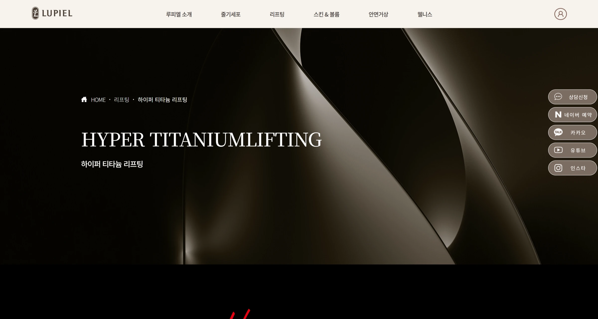

2026.03
LUPIEL CLINIC
신규 시술이 늘어난 피부과 · 성형외과 루피엘의원의, 시술 서브페이지 11종 디자인

Background
루피엘의원은 피부과 · 성형외과로, 새로운 시술이 추가되면서 시술 서브페이지 11종을 새로 만들어야 했습니다. 이 페이지를 보는 사람은 병원을 찾는 방문객과, 여러 시술을 비교하며 정보를 찾는 사람들입니다.
클라이언트는 사이트 전체가 하나로 보이고, 깔끔하고 고급스러운 인상이길 원했습니다. 마케팅 기획 1명, 외주 퍼블리셔 1명과 함께 진행했고, 디자인은 전부 맡았습니다.
Key Decisions
공통 하단, 시술별 상단
시술마다 담아야 할 정보가 달라 상단은 비슷한 시술끼리 같은 구성으로 묶었고, 11개 페이지 모두의 하단에는 루피엘을 소개하는 섹션을 똑같이 넣었습니다. 레이아웃이 달라지는 섹션도 기본 톤은 같게 유지해, 어느 페이지를 열어도 같은 병원으로 느껴지게 했습니다.
메인 리디자인에서 이어받은 색
사내의 다른 디자이너가 메인페이지를 리디자인하며 정한 색과 로고 색을 바탕으로 서브페이지의 브라운 · 베이지 톤을 직접 정해, 메인과 서브가 따로 놀지 않게 했습니다.
눈에 걸리지 않는 이미지
클라이언트가 AI 이미지를 꺼려 스톡 이미지와 실제 장비 사진을 중심으로 썼습니다. 인물 이미지가 필요한 곳은 확대 · 크롭해 사용하고, 나머지 이미지도 톤을 맞춰 한 페이지 안에서 튀는 이미지가 없게 했습니다.
기존 사이트와 충돌 없는 퍼블리싱
다른 페이지들과 다른 시기에 의뢰받은 하이퍼 티타늄 리프팅 페이지는 퍼블리싱까지 직접 맡았습니다. 기존 사이트의 스타일과 충돌하지 않게 만들고, 다른 사람이 수정하더라도 알아볼 수 있도록 주석과 파일 정리에 신경 썼습니다.
Design System
메인페이지의 딥 브라운을 기준으로 베이지 · 아이보리 단계를 쌓고, 제목은 세리프로 고급스러운 인상을 주었습니다.
Color
- Deep Brown#40250A
- Beige#D3BDAA
- Ivory#F6F3EE
- Cream#F3EEE7
- Dark#262626
- Text#333333
- Warm Gray#433A37
- Gray#8C8585
Typography
Lu:FRAME의 단계별 설계
Noto Serif KR Medium 50 — 섹션 제목오직 한 분 한 분만을 위한 체계적인 솔루션
Noto Sans KR Regular 24 — 리드 문장개인의 피부 타입, 상태, 노화 정도에 맞춰 시술을 설계합니다.
Noto Sans KR Regular 20 — 본문
Subpages
11종 가운데 4개 페이지의 전체 화면입니다. 이미지를 누르면 크게 볼 수 있습니다.


오른쪽 플로팅 버튼은 사이트 공통 요소로, 디자인 범위에서 제외했습니다.
Design + Publishing
하이퍼 티타늄 리프팅 페이지는 디자인에 이어 퍼블리싱까지 직접 진행했습니다. PC와 모바일에서 같은 흐름이 유지되도록 구현했습니다.


Retrospective
디자인 시스템을 제대로 정리해 두지 못했고, 지금 보면 글자 크기가 전반적으로 큰 편이라 아쉽습니다. 이제는 퍼블리싱까지 할 수 있으니, 리뉴얼이나 새 페이지를 만들 때도 파일 정리를 함께 진행해 수정하기 쉬운 구조로 만들고 싶습니다.